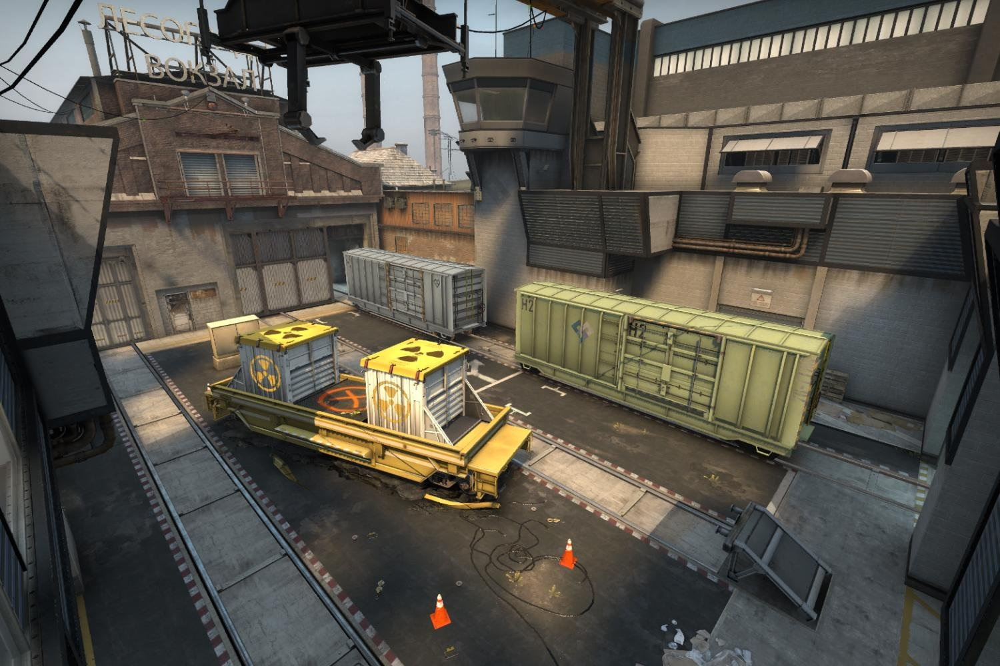
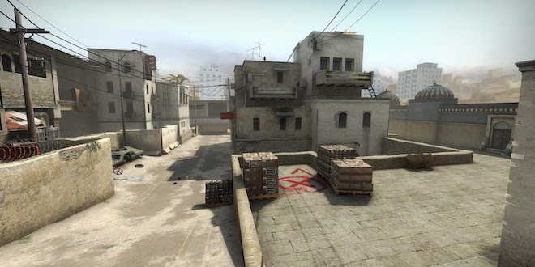

Main Menu
Main Menu
 Teams
Teams
 Players
Players
 Services
Services
 Events
Events
 Stats
Stats
 Maps
Maps
 More
More
#1. The most popular map which is played is mirage.

#2. Cache is a very popular map which is located in Russia.

#3. Overpass is a large map where there is many different passages and sewers to get access to other parts of the map.

#4. Inferno is a map with lots of close combat and strategic capability.

#5. Train is a map where there is a lot of hight difference and close and long range areas to fight.
#6. Dust II is a map which has been in the map pool many times and has been in counter strike from the beginning.
